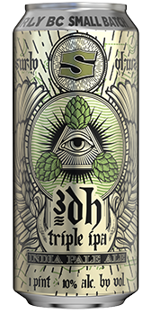

Finnegan's Irish Ale (ABV 4.8%)Finnegans Irish Ale is brewed using three varieties of imported 2 row malts & hops creating a medium-bodied ale with a creamy, malty finish and clean aftertaste. All profits from the Finnegans Irish Ale goes to provide fresh, local produce to those in need. |
Goose Island Paper Umbrella (ABV 4.5%)Tropical vacation long overdue? We’re right there with ya. Save your P.T.O. because you’ve got paradise in a can. Pop open a Paper Umbrella and surround yourself with the refreshing and tropical hop character. Cheers! |
||
Guinness (ABV 4.2%)Quite possibly the most famous stout in the world, Guinness is produced by the Guinness brewery in Dublin, Ireland, and other locations in Ireland. It is a very dark stout beer that has a notable "cascade" effect below the head when it is poured, due to the nitrogen content of the liquid. This also produces a notably smooth head, because nitrogen bubbles are smaller than carbon dioxide bubbles. |
Hamm's (ABV 4.7%)The old reliable Hamm's. Nothing much like it on the market, and hardly a better price for it: $3/pint. |
||
Harp (ABV 5%)This classic Irish lager has a pleasant, buttery sweet aroma. Crisp and dry, Harp finishes remarkably smooth. Harp's distinctive, refreshing taste has earned it six gold medals in the famous annual Monde Selection beer tasting competition. It is Northern Ireland's number one lager. |
Insight The Wisdom of Old One-Eye (ABV 5.6%)Old One-Eye is a unique breed of Blonde Ale birthed from the loins of the Norwegian yeast, Hornindal Kveik, and fermented at high temperatures to create a smooth, easy-drinking beast. An ode to Odin, who traded an eye for wisdom, this brew pairs well with almost anything. |
||
Lagunitas Pils (ABV 6.0%)Like Adam and Eve, Isaac and Ishmael, Mao and Confucious, Good and Evil, Day and Night, Hitites and Visigoths, John and Lorena, or Groucho and Moe, Ales and Lagers are as different as can be. Still, we must love each for who they are, separately but equally, with liberty and justice for all. Cheers! |
Oatmeal Stout Nitro (ABV 5.2%)While its cascading rich black color will be familiar to Stout enthusiasts, ours is decidedly different. It's made with naked oats from the UK, for one. Smooth and slightly sweet, with hints of coffee, caramel and chocolate. |
||
Grainbelt Premium (ABV 4.6%)Light to medium straw color. Light malt flavor and detectable sweetness. Unique Premium hop aroma and flavor with a low hop bitterness. It’s Premo. Need we say more? |
Raspberry Sour Wench (ABV 7.0%)Our Sour Wench Blackberry Ale is a fruity Berliner Weisse-style beer bursting with Oregon blackberry flavor and aroma. The fruit addition adds a beautiful violet hue, and the taste has an approachable soft tartness from kettle souring. This artful gypsy will surely lure you into the world of sour beers. |
||
Smithwicks (ABV 5.0%)From Ireland, comes this clean, refreshing ale that balances hops and roasted barley for a flavor that mixes a slightly sweet malt with moderate bitterness. Famous amber color comes from the specially roasted barley. Smithwick's is Ireland's number one ale. Its exceptional taste, distinctive color and purity of ingredients make it unique. Its rich, satisfying taste has earned it five gold medals in the famous Monde Selection Beer Tasting Competition. |
Schell’s Oktoberfest (ABV 5.5%)With its bright copper-orange color, it is quite symbolic of the autumnal shift of the season. A slightly higher strength, and warm malt body make it the perfect companion for the crisp fall weather in Minnesota. The use of Munich and Vienna malts give the beer its toasty malt backbone, and melanoidin-rich flavor and aroma. It has a soft malt sweetness, pleasant mouthfeel and a slight spiciness. Hop character is subdued, as the malt takes center stage with this beer. |
||
Socialable Rusty Chain (ABV 6.6%)Rusty Chain links together a blend the Midwest’s finest freshly pressed apples with ripe cranberries. The result is a bright rose color, light body and brilliant berry flavor that balances tart acidity with gentle residual sweetness. |
Summit Slugfest (ABV 4.7%)Summit Slugfest is an unfiltered IPA with an orange appearance, low in alcohol and bitterness but big in citrus hop flavors and aromas. Seeking to connect new American IPA trends with our classical European approach to brewing, Slugfest offers aggressive and powerful citrus hop flavors and aromas of tangerine, melon and lemon, thanks to hop varieties Huell Melon, Azacca and Mandarina Bavaria. Malt notes of toast, English biscuits and breadcrust provide this session-style ale with balanced drinkability. |
||
|  |
Surly 3DH (ABV 10%)Cloaked amid the brewhouse shadows, rites and rituals conjure impossible hop flavor. Over the low rumble of equipment, whispers of a triple dry-hopped beer arise. New and unknowable, 3DH is your initiation. |
Surly Furious (ABV 6.2%)Brewed with a dazzling blend of American hops and Scottish malt, this crimson-hued ale delivers waves of citrus, pine and caramel-toffee. For those who favor flavor, Furious has the hop-fire your taste buds have been screeching for. |
|
Surly Hell Lager (ABV 5.0%)Hell is a pale-gold lager not unlike the zwickelbiers popular in Dorit’s hometown of Bremen. It’s not filtered and it’s brewed with lager yeast. You can expect bready malt aromas and flavors, floral hops, and a balanced finish. |
Surly Temple (ABV 9.0%)Every great temple started from a simple foundation and rose from there. This beer’s foundation is an imperial kettle sour, embellished with pomegranate, peach, vanilla bean, and mango, then back-sweetened with a touch of lactose for a complex sweet, tart, and fruit-forward take on a complex and beautiful construct. |
||
Surly Todd the Axe Man (ABV 7.2%)Every great temple started from a simple foundation and rose from there. This beer’s foundation is an imperial kettle sour, embellished with pomegranate, peach, vanilla bean, and mango, then back-sweetened with a touch of lactose for a complex sweet, tart, and fruit-forward take on a complex and beautiful construct. |
Warpigs Salmon Pants (ABV 5.3%)Grainy malt aromas mixed with floral citrus and melon notes. A light body and dry finish. |